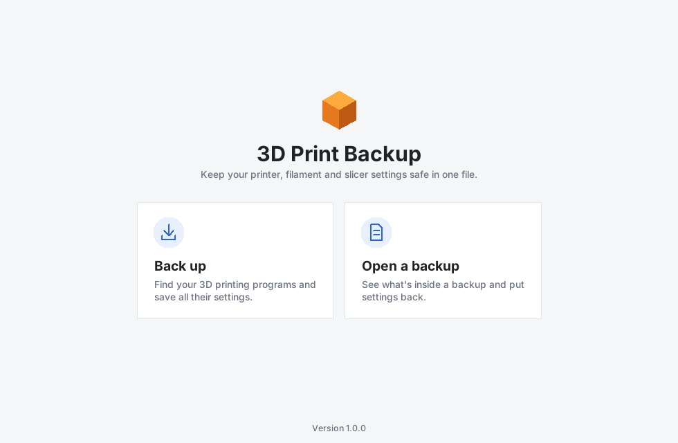
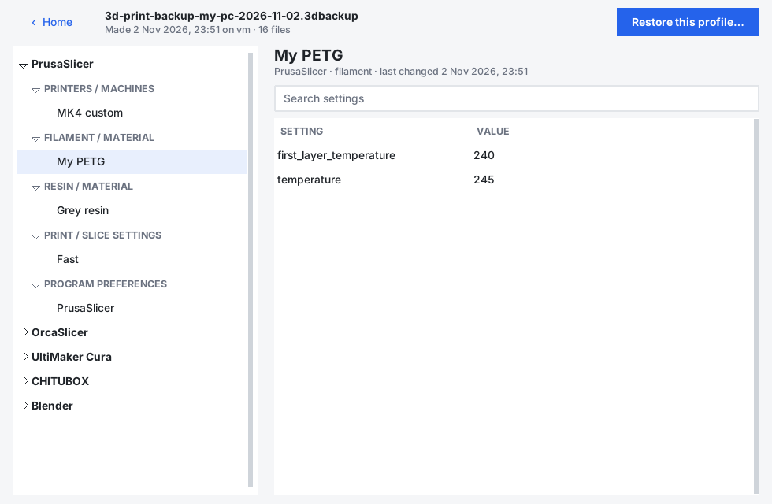

Never lose your print settings again.
3D Print Backup finds your slicers and saves every printer, filament, resin and print profile into one file, ready for when you reinstall or switch computers.
Download for Windows
How it works
Two buttons. That's the whole app.
Back up
It finds your 3D printing programs and shows what it found, like “3 printers · 12 filaments”.
Keep the file safe
Everything goes into one .3dbackup file. Put it on a USB stick or cloud drive.
Open it anytime
See every setting, search for one, or put your profiles back with one click.

See exactly what you saved
Open a backup and browse your profiles as a simple setting and value list.
- Copy a temperature or retraction setting by hand
- Restore one profile, one program, or everything
- Files it replaces are kept as a copy, so nothing is lost
- Works offline. Your settings never leave your computer.
Works with
It looks for these programs automatically.
Filament slicers
PrusaSlicer, OrcaSlicer, Bambu Studio, UltiMaker Cura, Creality Print, SuperSlicer, ElegooSlicer, Anycubic Slicer Next, QIDI Studio, Snapmaker Orca, Orca‑Flashforge, ideaMaker, Simplify3D
Resin slicers
CHITUBOX, Lychee Slicer, PreForm, UVtools, plus PrusaSlicer resin profiles
Modelling & CAD
Blender, FreeCAD, OpenSCAD
Printer hosts
Klipper / Moonraker, OctoPrint
Back up your settings in under a minute
Unzip, double‑click 3D Print Backup.exe, and press Back up.
Download for Windows